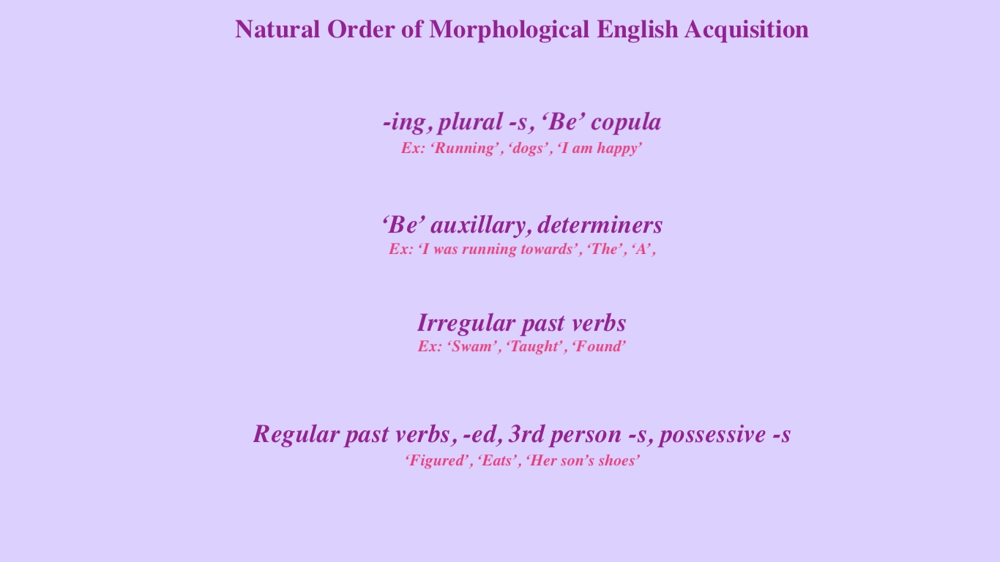
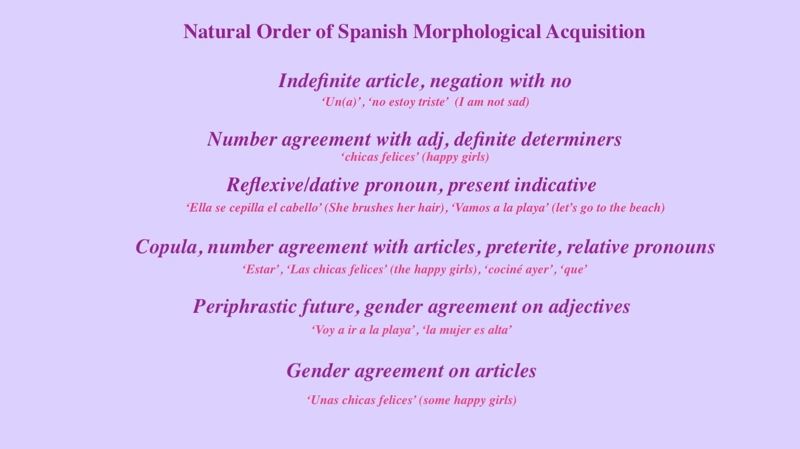

Theories and concepts found under this domain include Universal Grammar (UG), Nativism, Modularity, Monitor Model, Input Hypothesis, Natural Order Hypothesis (NOH), Affective Filter, and more!
Nativism → the innate ability to produce language without hearing strict rules, a child’s ability to produce output past that of their input (poverty of the stimulus)
Modularity → the brain uses multiple collections of processing in separate areas for different tasks, they aren’t all necessarily connected (Mitchell 2013)
Input hypothesis ( i + 1 ) → Comprehensible input slightly past one’s current level (i) is both mandatory and the only component necessary for SLA (according to Krashen) (Mitchell 2013)
Affective filter hypothesis → a positive association with language needed, helps to account for those who may still struggle with learning languages with the above hypotheses and models
Universal Grammar → all human languages have universal constraints, an innately available structure, and require naturalistic approaches
Monitor Model/Hypothesis → paying attention to output to guarantee the production of target forms; these edited forms become our spontaneous speech production (Lightbown 2006)
Natural Order Hypothesis → predictable sequences of what and when you acquire parts of a language; the order in which a language is acquired is largely determined and predictable
This hypothesis extends over inflectional morphology, question formation, negation, and word order.
Here are some examples of the NOH in practice:
 While harder to prove these theories empirically, Innatist concepts are incredibly influential to the rest of the SLA theoretical framework.